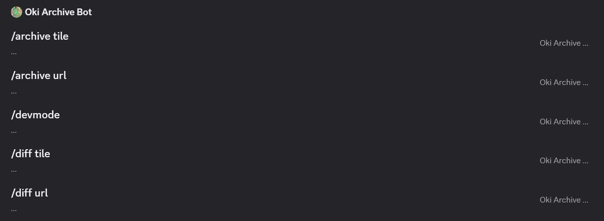

(沖ノ鳥鯖での)大まかな利用方法
基本的に「oki-archive-bot用」チャンネルで使用してください
"/"を入力して"Oki Archive Bot"を選択するとコマンド一覧が表示され、選択できます

基本的に「oki-archive-bot用」チャンネルで使用してください
"/"を入力して"Oki Archive Bot"を選択するとコマンド一覧が表示され、選択できます
アーカイブをタイル座標指定で取得します。
/archive tile x: y: [time:]
●x, y…タイルX座標、Y座標(マーブル系に表示されます)
●time…時間指定。なにも指定しない場合は3時間前。*時間前→*h、*日前→*d、*か月前→*m
アーカイブをURL指定で取得します。
/archive url url: [time:]
●url…wplaceのURL(ｈttps//wplace.live/?lat=...&lng=...&zoom=...)。wplaceでpx選択時にShareから取得できます。
●time…上記参照
差分画像をタイル座標指定で生成します。
/diff tile x: y: time1: time2:
●x, y…上記参照
●time1, time2…前者が比較元、後者が比較先のそれぞれ時間を指定。入力形式はtimeと同じ
差分画像をURL指定で生成します。
/diff url url: time1: time2:
●url…上記参照
●time1, time2…上記参照
開発者モードの切り替えをします。(トグル式)
/divmode
＊ひろかわびーちのみが実行権限をもっていますが、権限が欲しい方はお知らせください。
開発者モードONの時のみ使用できる簡易テストコマンド。
/test x: y: [time:]